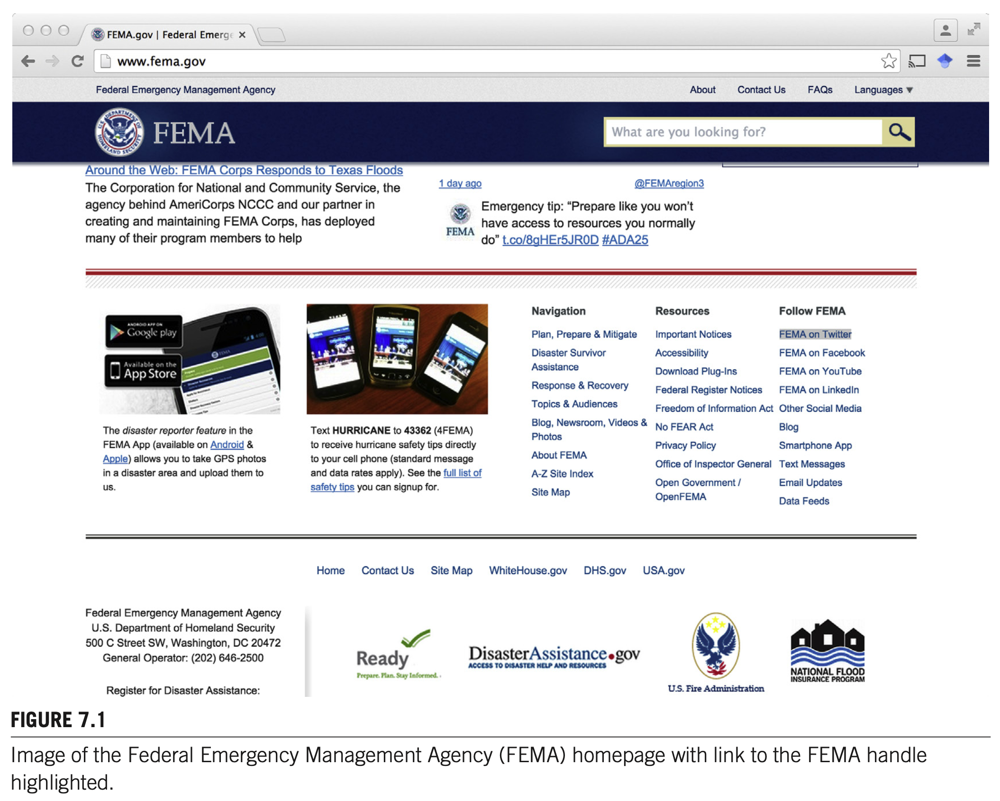
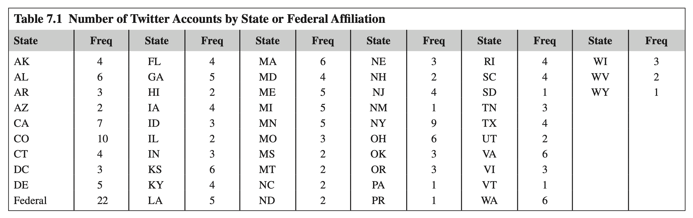
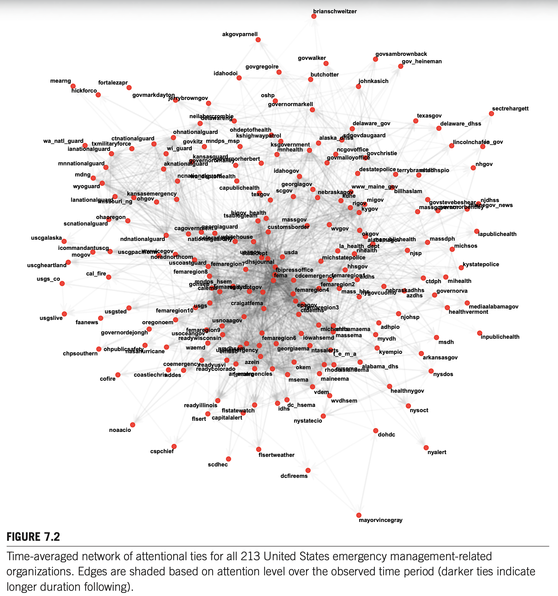
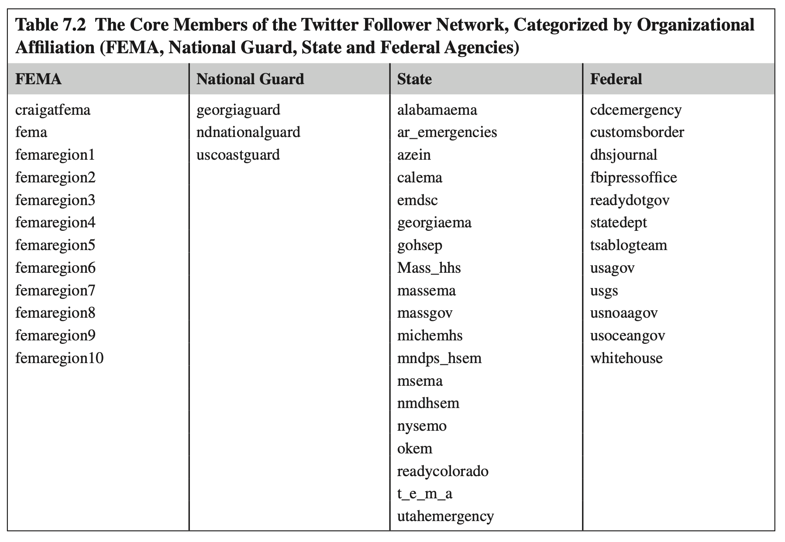
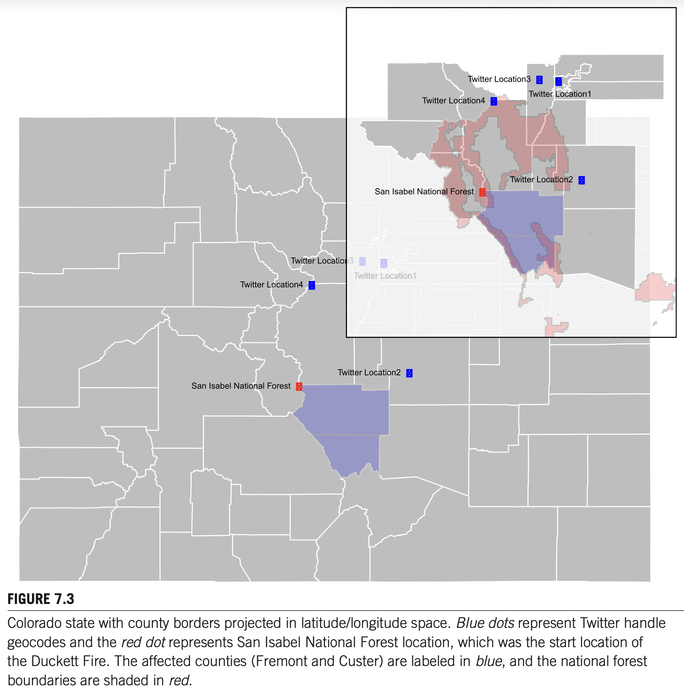
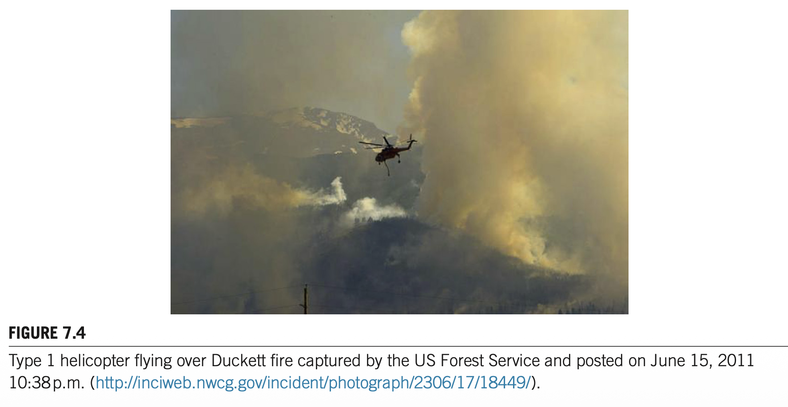
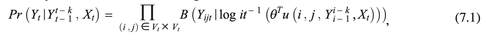
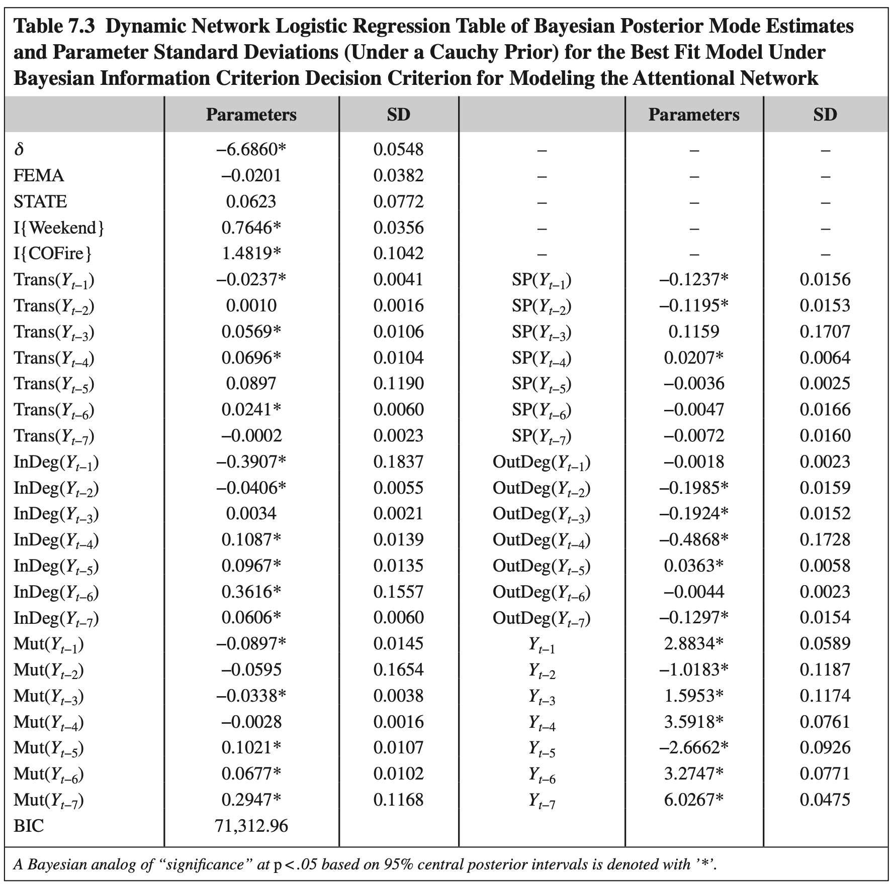
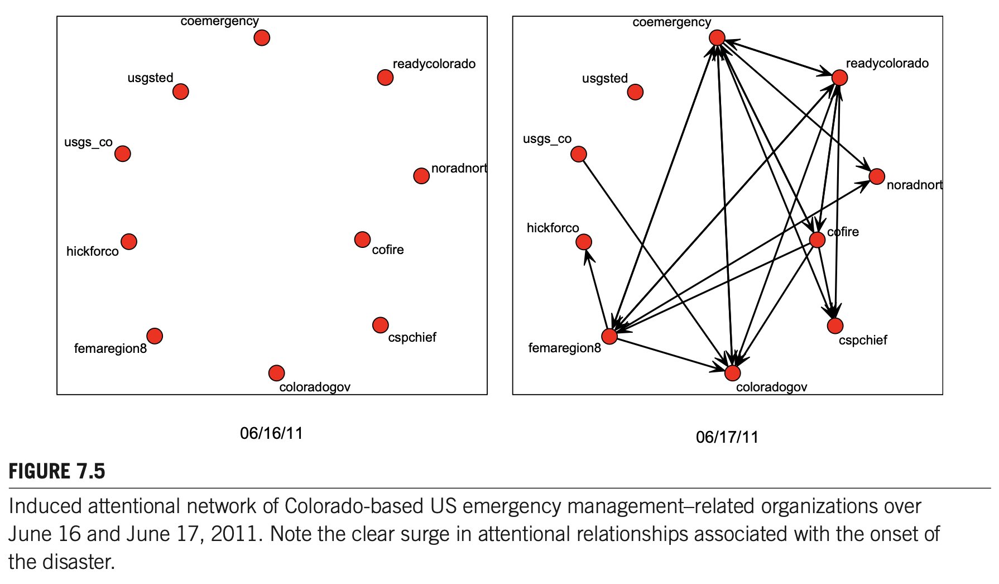
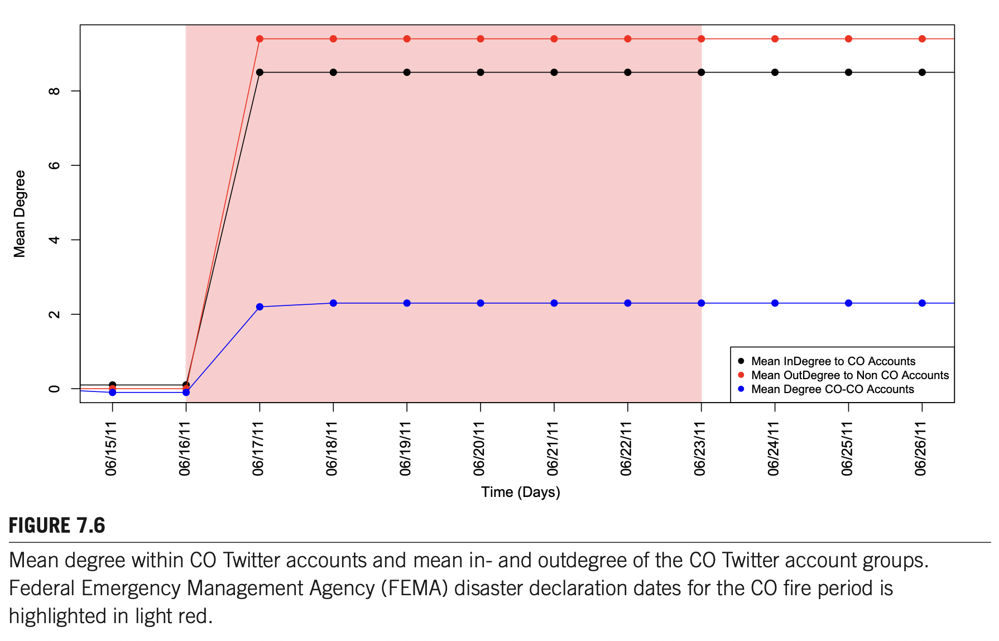

INTRODUCTION (서론)
원문 pp. 94–95- 주의(Attention)의 정의: 이러한 상호작용의 가장 기본적인 발현 형태는 바로 주의(Attention)입니다. 즉, "한 조직이 다른 조직의 행동을 관찰하거나 다른 조직으로부터 정보를 수신하기 위해 기울이는 체계적인 노력(a systematic effort on the part of one organization to observe the actions of and/or to receive information from another)"을 의미합니다.
- 정보 확산의 통로(Conduit): 주의 관계는 위기 상황(crisis events) 동안 정보 확산(information diffusion)을 위한 통로로서 특히 중요할 수 있으며, 평시 운영 기간 동안에는 조직의 루틴(routines), 관행(practices), 표준(standards)을 전파하는 통로가 됩니다(DiMaggio & Powell, 1983; Reeder et al., 2014).
- 신호 전달 기능(Signaling Function): 제3자에게 공개적으로 가시화될 때, 주의 관계는 주의를 기울이는 자(attender)와 주의를 받는 자(attendee) 사이의 제휴·소속(affiliation) 형태를 제3자에게 알리는 신호 전달 기능(signaling function)도 가질 수 있습니다(Kwak et al., 2010). 예를 들어, 연방 기관(federal agency)이 특정 지방 기관(local agency)을 팔로우(follow)하기 시작하면, 대중은 그 지방 기관이 연방 정부의 공식 지원을 받거나 연방 기관과 제휴 관계에 있다고 인식할 수 있습니다.
- 기존 연구의 편중: 비상 상황에서 트위터 활용을 다룬 선행 연구들은 주로 신속한 정보 보급 및 전송 촉진, 집단적 의미구성(collective sense-making) 과정 및 루머 유포(rumoring) 지원 역량에 집중되어 왔습니다(Spiro et al., 2012; Sutton, 2010; Sutton et al., 2014). 다른 연구들은 디지털 자원봉사와 상황인식 향상 가능성을 살펴보기도 했습니다(Starbird & Palen, 2011; Vieweg et al., 2010).
- 선행 연구의 공백: 그러나 이 맥락에서 비상대응 조직 자체(emergency response organizations themselves)의 활동을 조사한 연구는 거의 없었습니다(Hughes et al., 2014; Reeder et al., 2014 등 제외). 나아가 조직 간 주의 관계의 진화하는 양상을 장기간 추적하고, 관계 형성(tie formation)과 해체(tie dissolution)를 지배하는 메커니즘을 체계적으로 규명한 연구는 존재하지 않았습니다.
LITERATURE REVIEW (문헌 검토)
원문 pp. 95–97MECHANISMS OF ATTENTIONAL INTERACTION DURING A DISASTER (재난 시 주의 상호작용의 메커니즘)
원문 pp. 97–98과거 연결의 지속 경향"] end subgraph 속성기반["2. 행위자 속성"] H2["가설 2: 동질혼 (Homophily)
동일 주(State) / FEMA 소속 일치"] end subgraph 내생적구조["3. 내생적 네트워크 구조 (구조적 의존성)"] H3["가설 3: 공유 파트너 (Shared Partners)
동일한 제3자를 팔로우"] H4["가설 4: 이행성 (Transitivity)
i->j, j->k => i->k 삼항 폐쇄"] H5["가설 5: 활동도 (Activity)
많은 대상을 팔로우하는 외향성"] H6["가설 6: 인기도 (Popularity)
많은 팔로워를 보유한 내향성"] H7["가설 7: 상호성 (Reciprocity)
과거 팔로우에 대한 맞팔로우"] end subgraph 외생적환경["4. 외생적 환경 및 이벤트"] H8["가설 8: 계절성 (Seasonality)
주말 vs 주중 활동 차이"] H9["가설 9: 재해 사건 효과 (Hazard Event)
재난 발생 지역 계정의 현저성 급증"] end 시간적동학 --> DNR["동적 네트워크 로지스틱 회귀 (DNR) 모델"] 속성기반 --> DNR 내생적구조 --> DNR 외생적환경 --> DNR
DATA (데이터)
원문 pp. 98–103
THE DYNAMIC NETWORK (동적 네트워크)

| State | Freq | State | Freq | State | Freq | State | Freq | State | Freq | State | Freq |
|---|---|---|---|---|---|---|---|---|---|---|---|
| AK | 4 | FL | 4 | MA | 6 | NE | 3 | RI | 4 | WI | 3 |
| AL | 6 | GA | 5 | MD | 4 | NH | 2 | SC | 4 | WV | 2 |
| AR | 3 | HI | 2 | ME | 5 | NJ | 4 | SD | 1 | WY | 1 |
| AZ | 2 | IA | 4 | MI | 5 | NM | 1 | TN | 3 | ||
| CA | 7 | ID | 3 | MN | 5 | NY | 9 | TX | 4 | ||
| CO | 10 | IL | 2 | MO | 3 | OH | 6 | UT | 2 | ||
| CT | 4 | IN | 3 | MS | 2 | OK | 3 | VA | 6 | ||
| DC | 3 | KS | 6 | MT | 2 | OR | 3 | VI | 3 | ||
| DE | 5 | KY | 4 | NC | 2 | PA | 1 | VT | 1 | ||
| Federal | 22 | LA | 5 | ND | 2 | PR | 1 | WA | 6 |

📌 [참고: Figure 7.2 그래프에 포함된 213개 트위터 계정 핸들 전체 목록 보기]
brianschweitzer, akgovparnell, govgregoire, idahodoi, govwalker, butchotter, govsambrownback, gov_heineman, mearng, fortalezapr, hickforco, johnkasich, wa_natl_guard, ctnationalguard, txmilitaryforce, ianationalguard, mnnationalguard, mdng, wyoguard, kansasemergency, lanationalguard, ohgov, missouri_ng, ohaoregon, scnationalguard, govmarkdayton, oshp, jerrybrowngov, neilabercrombie, delawareng, ohnationalguard, ohdeptofhealth, kshighwaypatrol, govkitz, mndps_msp, wi_guard, kansasguard, governoromalley, governorherbert, aknationalguard, ncnationalguard, wa_deptofhealth, capublichealth, governormarkell, sectrehargett, texasgov, ksgovernment, mnhealth, delaware_gov, alaska_dhss, sdgovdaugaard, ncgovoffice, govchristie, govmalloyoffice, destatepolice, terrybranstad, nhdhhspio, delaware_dhss, lincolnchafee, in_gov, nhgov, idahogov, georgiagov, scgov, uscgalaska, icommandantuscg, mogov, uscgheartland, cal_fire, usgs_co, usgsted, usgslive, faanews, texgov, higov_health, tsablogteam, cagovernment, georgiaguard, ndnationalguard, coloradogov, nationalguardny, whitehouse, uscgpacificnw, wwwicegov, usagov, statedept, noradnorthcom, uscoastguard, femaregion7, dhsjournal, femaregion8, mndps_hsem, gohsep, calema, femaregion5, readydotgov, craigatfema, usgs, femaregion10, oregonoem, usnoaagov, www_maine_gov, nebraskagov, billhaslam, kdhe, migov, rigov, kygov, govstevebeshear, njdhss, massgovernor, governorbentley, mainegov_news, massgov, customsborder, wvgov, okgov, alabamagov, mepublichealth, la_health_dept, rihealth, usda, njsp, michstatepolice, hhsgov, fbipressoffice, fema, cdcemergency, femaregion1, aldhs, femaregion2, femaregion4, mass_hhs, nebraskadhhs, nygovcuomo, azdhs, iapublichealth, massdph, michsos, ctdph, mihealth, governorva, kystatepolice, epagov, femaregion3, ctdemhs, mediaalabamagov, healthvermont, njohsp, chpsouthern, governordejongh, femaregion9, michemhs, alabamaema, adhpio, usoceangov, readywisconsin, femaregion6, iowahsemd, massema, myvdh, ohpublicsafety, waemd, nmdhsem, nasahurricane, emdsc, utahemergency, georgiaema, ntasalerts, t_e_m_a, kyempio, azein, coemergency, readyusvi, readycolorado, okem, alabama_dhs, nysemo, rhodeislandema, coastiechris, femalro, ar_emergencies, cofire, nddes, maineema, msema, vdem, healthnygov, wvdhsem, readyillinois, flstatewatch, flsert, capitalalert, dc_hsema, idhs, nystatecio, nysoct, inpublichealth, msdh, arkansasgov, nysdos, noaacio, dohdc, cspchief, flsertweather, nyalert, scdhec, dcfireems, mayorvincegray

| 조직 분류 (Affiliation) | 핵심 멤버 트위터 핸들 (Core Twitter Accounts) |
|---|---|
| FEMA (연방재난관리청) | craigatfema, fema, femaregion1 ~ femaregion10 (총 12개) |
| National Guard (주 방위군) | georgiaguard, ndnationalguard, uscoastguard |
| State (주 정부 기관) | alabamaema, ar_emergencies, azein, calema, emdsc, georgiaema, gohsep, mass_hhs, massema, massgov, michemhs, mndps_hsem, msema, nmdhsem, nysemo, okem, readycolorado, t_e_m_a, utahemergency |
| Federal (기타 연방 기관) | cdcemergency, customsborder, dhsjournal, fbipressoffice, readydotgov, statedept, tsablogteam, usagov, usgs, usnoaagov, usoceangov, whitehouse |
DISASTER CASE STUDY: COLORADO DUCKETT FIRE (재난 사례: 콜로라도 덕켓 산불)


METHODS (연구 방법)
원문 pp. 103–107NOTATION (수학적 표기법)
DYNAMIC NETWORK REGRESSION (동적 네트워크 회귀; DNR)

식 (7.1) 동적 네트워크 로지스틱 회귀(DNR) 우도함수. $\mathcal{B}$는 베르누이 pmf, $u$는 충분통계량 벡터, $\theta$는 모수 벡터.
MECHANISMS OF ATTENTIONAL DYNAMICS (주의 동학 매개변수화)
- 기저 주의율 (Base Rate, $\delta$): 임의의 두 계정이 연결될 기본 절편(intercept).
- 관성 (Inertia, $Y_{t-1} \sim Y_{t-7}$): 1일~7일까지의 일별 과거 연결 지속 효과.
- 동질혼 (Homophily): 동일 주(STATE) 일치 및 FEMA 소속 일치 여부.
- 공유 파트너 (Shared Partners, $SP$): 두 조직이 동시에 팔로우하는 제3자 $k$의 수.
- 이행성 (Transitivity, $\text{Trans}$): $i \rightarrow k \rightarrow j$ 2-경로의 수.
- 인기도와 활동도: 내향차수($\text{InDeg}$, 인기도) 및 외향차수($\text{OutDeg}$, 활동도).
- 상호성 ($\text{Mut}$): 시차 호혜성(상호 맞팔로우) 횟수.
- 계절성 ($I\{\text{Weekend}\}$): 주말 vs 주중 활동 차이.
- 재해 사건 효과 ($I\{\text{COFire}\}$): 콜로라도 계정 × FEMA 산불 재난 선포 기간 상호작용.
RESULTS (분석 결과)
원문 pp. 107–109
| 매개변수 (Parameters) | 추정치 (Estimate) | 표준편차 (SD) | 매개변수 (Parameters) | 추정치 (Estimate) | 표준편차 (SD) |
|---|---|---|---|---|---|
| 절편 ($\delta$, Baseline) | -6.6860* | 0.0548 | $SP(Y_{t-1})$ (공유파트너 1일) | -0.1237* | 0.0156 |
| FEMA 동질혼 | -0.0201 | 0.0382 | $SP(Y_{t-2})$ (공유파트너 2일) | -0.1195* | 0.0153 |
| STATE 동질혼 | 0.0623 | 0.0772 | $SP(Y_{t-3})$ (공유파트너 3일) | 0.1159 | 0.1707 |
| $I\{\text{Weekend}\}$ (주말 효과) | 0.7646* | 0.0356 | $SP(Y_{t-4})$ (공유파트너 4일) | 0.0207* | 0.0064 |
| $I\{\text{COFire}\}$ (산불 재난) | 1.4819* | 0.1042 | $SP(Y_{t-5})$ (공유파트너 5일) | -0.0036 | 0.0025 |
| $\text{Trans}(Y_{t-1})$ (이행성 1일) | -0.0237* | 0.0041 | $SP(Y_{t-6})$ (공유파트너 6일) | -0.0047 | 0.0166 |
| $\text{Trans}(Y_{t-2})$ (이행성 2일) | 0.0010 | 0.0016 | $SP(Y_{t-7})$ (공유파트너 7일) | -0.0072 | 0.0160 |
| $\text{Trans}(Y_{t-3})$ (이행성 3일) | 0.0569* | 0.0106 | $\text{OutDeg}(Y_{t-1})$ (활동도 1일) | -0.0018 | 0.0023 |
| $\text{Trans}(Y_{t-4})$ (이행성 4일) | 0.0696* | 0.0104 | $\text{OutDeg}(Y_{t-2})$ (활동도 2일) | -0.1985* | 0.0159 |
| $\text{Trans}(Y_{t-5})$ (이행성 5일) | 0.0897 | 0.1190 | $\text{OutDeg}(Y_{t-3})$ (활동도 3일) | -0.1924* | 0.0152 |
| $\text{Trans}(Y_{t-6})$ (이행성 6일) | 0.0241* | 0.0060 | $\text{OutDeg}(Y_{t-4})$ (활동도 4일) | -0.4868* | 0.1728 |
| $\text{Trans}(Y_{t-7})$ (이행성 7일) | -0.0002 | 0.0023 | $\text{OutDeg}(Y_{t-5})$ (활동도 5일) | 0.0363* | 0.0058 |
| $\text{InDeg}(Y_{t-1})$ (인기도 1일) | -0.3907* | 0.1837 | $\text{OutDeg}(Y_{t-6})$ (활동도 6일) | -0.0044 | 0.0023 |
| $\text{InDeg}(Y_{t-2})$ (인기도 2일) | -0.0406* | 0.0055 | $\text{OutDeg}(Y_{t-7})$ (활동도 7일) | -0.1297* | 0.0154 |
| $\text{InDeg}(Y_{t-3})$ (인기도 3일) | 0.0034 | 0.0021 | $Y_{t-1}$ (관성 1일) | 2.8834* | 0.0589 |
| $\text{InDeg}(Y_{t-4})$ (인기도 4일) | 0.1087* | 0.0139 | $Y_{t-2}$ (관성 2일) | -1.0183* | 0.1187 |
| $\text{InDeg}(Y_{t-5})$ (인기도 5일) | 0.0967* | 0.0135 | $Y_{t-3}$ (관성 3일) | 1.5953* | 0.1174 |
| $\text{InDeg}(Y_{t-6})$ (인기도 6일) | 0.3616* | 0.1557 | $Y_{t-4}$ (관성 4일) | 3.5918* | 0.0761 |
| $\text{InDeg}(Y_{t-7})$ (인기도 7일) | 0.0606* | 0.0060 | $Y_{t-5}$ (관성 5일) | -2.6662* | 0.0926 |
| $\text{Mut}(Y_{t-1})$ (상호성 1일) | -0.0897* | 0.0145 | $Y_{t-6}$ (관성 6일) | 3.2747* | 0.0771 |
| $\text{Mut}(Y_{t-2})$ (상호성 2일) | -0.0595 | 0.1654 | $Y_{t-7}$ (관성 7일) | 6.0267* | 0.0475 |
| $\text{Mut}(Y_{t-3})$ (상호성 3일) | -0.0338* | 0.0038 |
최종 BIC = 71,312.96 (* 95% 중앙 사후 신뢰구간 기준 p < .05 수준에서 유의함) | ||
| $\text{Mut}(Y_{t-4})$ (상호성 4일) | -0.0028 | 0.0016 | |||
| $\text{Mut}(Y_{t-5})$ (상호성 5일) | 0.1021* | 0.0107 | |||
| $\text{Mut}(Y_{t-6})$ (상호성 6일) | 0.0677* | 0.0102 | |||
| $\text{Mut}(Y_{t-7})$ (상호성 7일) | 0.2947* | 0.1168 | |||
INTERPRETATION (결과 해석)
- 이행성 & 상호성: 단기 시차(1~3일)에서는 음수(-)이나, 4~7일 장기 시차에서는 매우 강한 양수(+)로 전환됩니다. 즉, 일시적인 삼항 관계나 맞팔로우는 쉽게 소멸되지만, 며칠간 유지된 관계는 삼항 폐쇄와 결속을 강화합니다.
- 인기도 (InDeg): 단기에는 음수이나 장기에는 큰 양수로 총합이 양수입니다. 즉, 일시적 반짝 인기는 곧 가라앉지만 지속적인 인기를 끈 계정은 팔로워를 계속 끌어당깁니다.
- 활동도의 역설 (OutDeg Penalty): 외향연결정도는 전 시차에서 일관되게 강력한 음수(-0.4868 등)입니다. 자신이 너무 많은 계정을 팔로우하면 오히려 주의 대상에서 탈락하는 심각한 페널티를 받습니다.


DISCUSSION (논의)
원문 pp. 109–1112. 로컬 상호 연계 프로토콜(SOP)의 사전 제도화: Figure 7.5처럼 산불이 터진 후에야 하룻밤 사이에 계정을 급조하여 팔로우하는 방식은 초기 대응 지연을 초래합니다. 관할 방재 기관 간의 상호 팔로우 및 피드 연계를 평시 위기대응 매뉴얼에 공식 등록해 두어야 합니다.
SUMMARY (요약)
원문 pp. 111–112ACKNOWLEDGMENTS (사사)
원문 p. 112[부록] 박사학위 논문 선행연구 9단계 분석 템플릿
| 단계 | 분석 항목 | 제7장 핵심 분석 내용 및 연구자 통제 관점 (Spiro et al., 2017) |
|---|---|---|
| 1단계 | 연구배경 (Background) | 대형 재난 시 수많은 유관기관 간 상호작용의 필수 선결 조건은 '주의(Attention)' 배분이나, 기존 연구는 공식 지휘선에만 편중되어 동태적인 주의 흐름을 실증하지 못함. |
| 2단계 | 이론적 개념 (Concepts) | 주의(Attention) 네트워크; 동적 네트워크 로지스틱 회귀(DNR); 관성(Inertia); 지속적 vs 일시적 구조 비대칭성; 사전 상태 고착화(Lock-in); 신호 효과(Signaling). |
| 3단계 | 연구목적 (Objective) | 트위터 상에서 213개 재난관리 유관 조직의 팔로워 네트워크 진화 동학과 2011년 콜로라도 덕켓 산불 충격 효과를 확률론적 통계 모델(DNR)로 규명함. |
| 4단계 | 연구방법 (Methodology) | HEROIC 프로젝트 데이터 활용. 213개 계정의 49일간 시계열 데이터 수집. 7일 시차 매개변수화 및 코시 사전분포(Cauchy Prior) 베이지안 BIC 최적화 DNR 모형 추정. |
| 5단계 | 연구결과 (Results) | 극도로 낮은 기저확률(0.0003), 압도적 관성 효과(5.82), 동질혼의 부재, 활동성 높은 노드로부터의 회피, 산불 발생 시 로컬 계정 대상 주의 폭발(+3.89). |
| 6단계 | 핵심 발견 (Findings) | 평시에는 강한 관성으로 인해 로컬 조직에 주의를 주지 않다가 재난 충격 시에만 급격히 주목하는 '주의 쏠림'과 '사전 고착화(Lock-in)'의 위험을 규명함. |
| 7단계 | 연구의 한계 (Limitations) | 트위터 플랫폼의 온라인 관계에 국한되어 현장 오프라인 무전/작전 지휘선과의 직접적 일치도를 검증하지 못함. |
| 8단계 | 이론적 시사점 (Implications) | 시간적 지수 랜덤 그래프 모형(TERGM) 패밀리의 DNR을 재난 조직 간 커뮤니케이션 연구에 최초로 성공적으로 적용하여 동태적 가설 검정 틀 확립. |
| 9단계 | 후속 연구 제언 (Future Scope) | 비상 시 로컬 팔로우 프로토콜(SOP)을 사전 제도화하고, 평시 주의 네트워크 모니터링을 통한 소방·산림 재난 정보 병목 예방 체계 수립. |
1. 연구질문 (Research Questions)
2. 확인한 연구결과 (Key Findings from Literature)
| 이론 및 챕터 출처 | 선행연구 핵심 실증 결과 | 본 소방 안전 네트워크 연구로의 연계 적용 |
|---|---|---|
| 압도적인 관성 효과 (Chapter 7; Table 7.3) |
주의 연계 형성은 기저확률이 극도로 낮으며(0.0003), 어제 맺어진 관계가 오늘도 유지되는 관성(Inertia = +5.82)이 지배함. | 평시 유관기관 간 주의 교류가 없으면 산불 발생 직후에도 소통선 개설이 지체되는 구조적 관성 병목 규명. |
| 재난 충격과 로컬 스포트라이트 (Chapter 7; Duckett Fire) |
산불 발생 시 재난에 직접 직면한 로컬 조직으로의 주의 연계 형성 확률이 48배($e^{3.89}$) 폭증함. | 산불 현장지휘를 총괄하는 관할 소방서(119안전센터)로 유관기관의 모니터링이 집중되는 현상을 DNR로 실증. |
| 사전 상태 고착화(Lock-in) (Chapter 7; Discussion) |
초기에 형성된 네트워크 관계가 고정되어, 실제 위험 환경이 변해도 주의를 재배분하지 못하는 치명적 경직성 발생. | 산불 다발 지역의 소방서가 평시 팔로우 네트워크에서 소외되어 초기 경보를 늦게 수신하는 고착화 위험 통제. |
| 활동성의 역설과 신호 효과 (Chapter 7; Interpretation) |
활동성(Activity)이 지나치게 높은 노드는 오히려 타 노드들로부터 회피됨(신호 잡음). 적절한 핵심 정보 제공이 필수적임. | 소방 상황실의 무분별한 단순 전파를 지양하고, 의사결정 중심의 핵심 전술 정보 브리핑 SOP 수립. |
3. 연구절차 (Research Procedure: 6단계 표준 프로세스)
연구 0점 & 경계 설정
(관내 30개 산불대응기관)"] --> S2["[STEP 2]
시계열 수집 도구 설계
(API + NDMS 로그)"] S2 --> S3["[STEP 3]
산불 전후 40일 수집
(일별 주의 행렬 구축)"] S3 --> S4["[STEP 4]
데이터 정제 & 코딩
(7일 시차 매개변수화)"] S4 --> S5["[STEP 5]
DNR & 넷마이너 분석
(베이지안 모드 추정)"] S5 --> S6["[STEP 6]
실무 개선 & KPI 도출
(산불 주의 SOP 제도화)"]
4. 네트워크 분석단위 및 분석지표 (Units & Network Metrics)
• In-Attention (인입 주의도): 타 기관들로부터 팔로우 및 실시간 모니터링을 받는 빈도 $\to$ 재난 정보 허브 지수.
• Out-Attention (인출 활동도): 타 기관의 상황을 모니터링하기 위해 팔로우하는 주의 투입량.
• 부문 간 주의 E-I Index: 기관 간 주의 배분의 상호 개방성 정량화.
• 상호성 (Reciprocity): 상호 간 맞팔로우를 통한 양방향 정보 소통선 형성 비율.
• 네트워크 관성도 (Inertia Index): 시계열에 따른 연계 유지 지속성.
• 재해 사건 효과 계수 ($\beta_{\text{Fire}}$): 산불 발생 충격이 전체 네트워크 밀도에 미치는 탄력성.
5. 네트워크 데이터 구조 및 코딩처리 방식 (Data & Coding Method)
| 구분 | 데이터 형식 | 변수 구성 및 코딩 기준 |
|---|---|---|
| 조직 속성 데이터 (Node Properties) |
1-mode 엑셀 테이블 (행 = 참여 조직 $i$) |
• ID: ORG01(소방서), ORG02(산림청 관리소), ORG03(군청 안전총괄과) 등 • Sector: 1=소방, 2=산림, 3=경찰, 4=지자체, 5=기상 • Jurisdiction: 1=현장관할(산불구역), 2=지원관할(인접지역), 3=중앙청 • Active_Daily: 일평균 상황보고 발신 건수 |
| 시계열 인접 행렬 ($Y_t \in \{0, 1\}^{N \times N}$) |
$30 \times 30$ 정방 행렬 ($t = 1, \dots, 40$일) |
$t$일 시점에 기관 $i$가 기관 $j$의 계정을 팔로우하거나 상황전파시스템 상에서 모니터링 대상으로 지정했는지 여부 (0=미지정, 1=지정). |
| 시차 매개변수 행렬 ($Y_{t-1} \sim Y_{t-7}$) |
$30 \times 30$ 정방 행렬 (7일 시차 구조) |
과거 1일~7일 전의 연계 지속성(Inertia) 및 삼항 폐쇄(Transitivity) 계산을 위한 시차 데이터셋. |
2. 산불 사건 더미 변수($I\{\text{Fire}_t\}$): 산불 발생일(초진 전)은 `1`, 평상시는 `0`으로 이진 코딩하여 외생 충격 효과 분리.
3. API 결측 통제: 소셜미디어 API 수집 실패일의 경우, 국가재난관리정보시스템(NDMS) 로그 기록으로 교차 보완.
6. 자료수집 및 데이터 정제 집행 전략 (Data Collection)
- 트위터/SNS 공식 계정 API 전수 수집: 관내 30개 재난관리 유관기관의 공식 계정 간 팔로우 관계를 일별로 추적.
- 국가재난관리정보시스템(NDMS) 및 소방 상황전파 로그 결합: 산불 출동 시 가동된 공식 통보·수신 로그 데이터를 시계열 행렬로 변환.
- 산불 발생 40일 시계열(Time Series) 구축: 산불 발생 전 15일, 발생 중 10일, 진화 후 15일간의 데이터를 완벽 구축.
7. DNR 및 넷마이너 4단계 정밀 분석 프로토콜
8. 최종 실무·정책 환류: 소방 협업 KPI 도출 및 법적 근거
• 소방 주도 협업 KPI(30%): '산불 초기 주의 네트워크 신속 정렬 지수' 및 '산불 취약지역 관할서 사전 모니터링 등록률'.